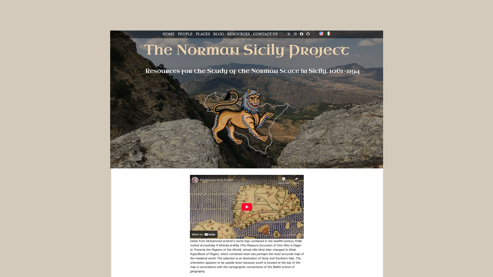
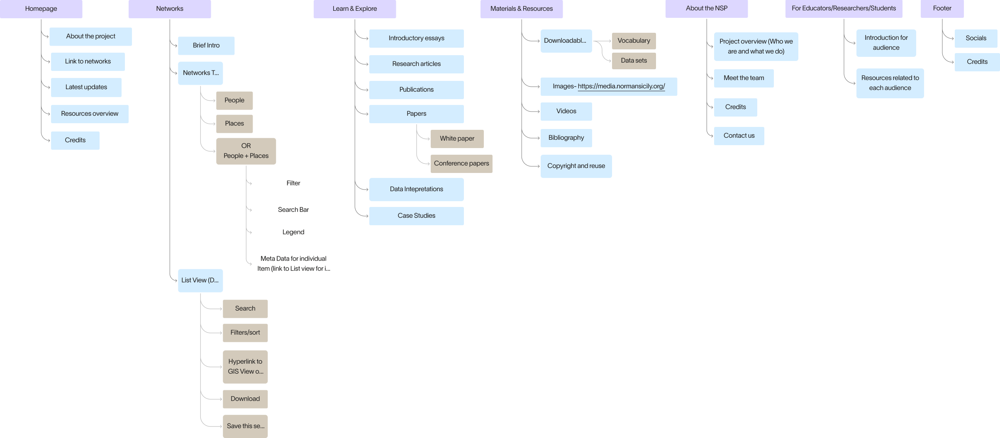
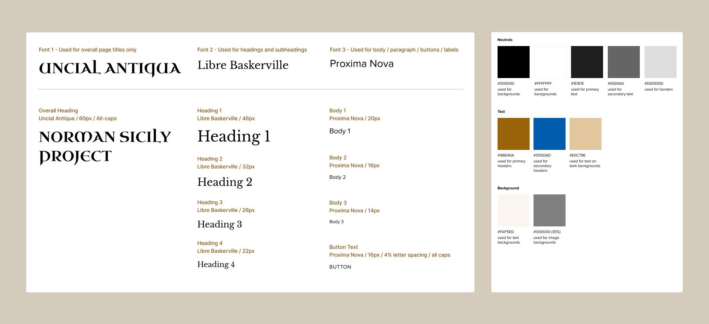
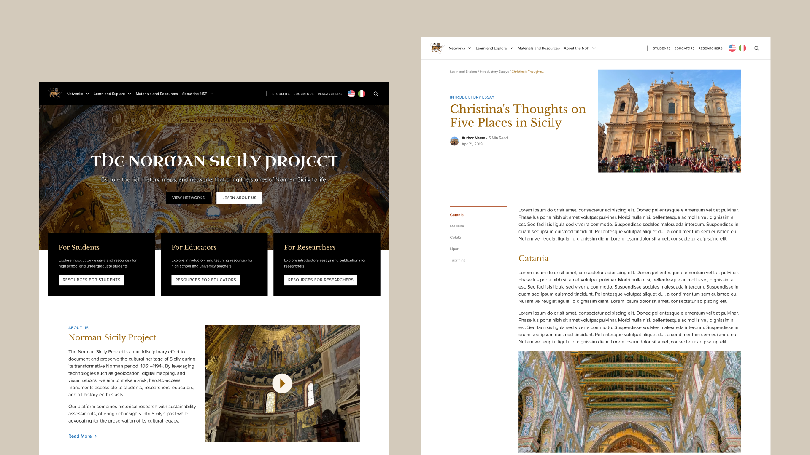
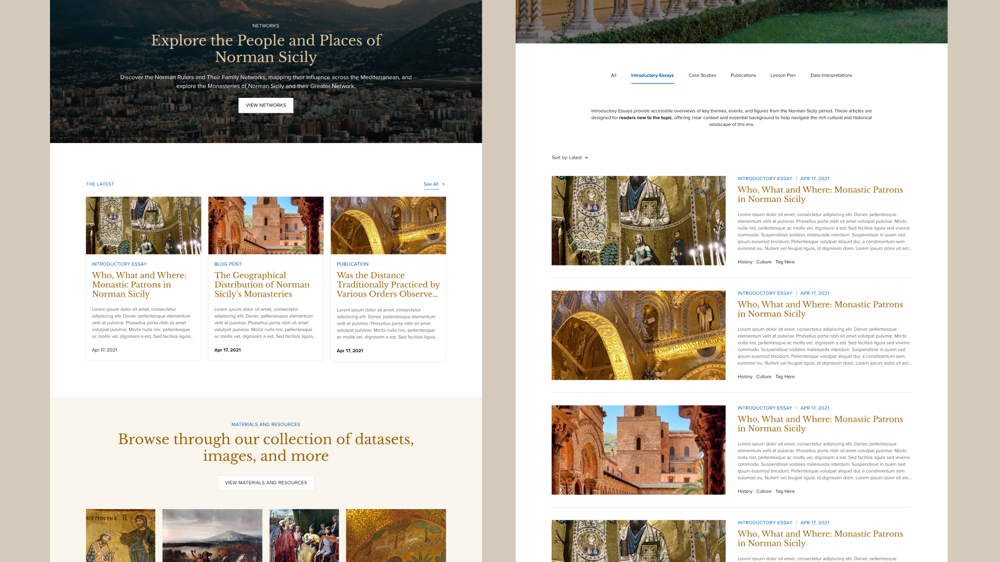
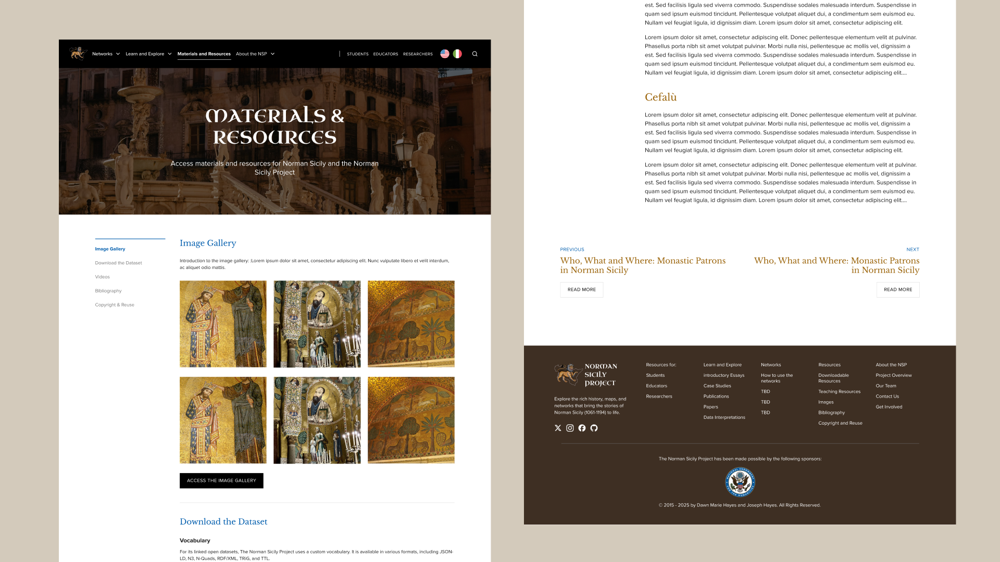

NSP, Transforming a Website to Bring History to Life.
The Norman Sicily Project, a NEH-funded project, brings together an extensive collection of maps, photos, introductory essays, data, and more, making it both a research tool and an educational resource. Partnering with another designer, I revampled the website to bring clarity and usability to this wealth of information, ensuring that diverse audiences can easily explore Sicily’s Norman past.
A rich historical archive that's hard to explore and digest meaningfully for readers.
The NSP housed an extensive collection information documenting 12th-century Norman Sicily. While academically rigorous, the experience was dense and offered limited guidance. Visually, the site felt flat and utilitarian that failed to reflect the color, vibrancy, and cultural richness of Norman Sicily. This disconnect between content and presentation made the history feel distant, rather than immersive or inviting to explore.
Creating an experience accessible to scholars, teachers, and learners alike.
After speaking with the project leads, we learned that the site needed to support a wide range of users, each approaching the content with different goals and levels of expertise. Some would come seeking in-depth materials, while others needed an approachable entry point into Norman Sicily’s history. Together, we defined 3 primary audiences.

Assessing existing design decisions to better align structure with user needs and website goals.
We also reviewed the work completed by designers before us, including their information architecture and low-fidelity wireframes. This analysis not only helped us understand the project’s direction so far but also identified opportunities to better align the experience with NSP’s goals as a research and educational resource:
- Page groupings and labels were inconsistent, making it difficult to understand how sections related or where to begin.
- Several pages felt unnecessary or misaligned with the project’s core purpose, adding cognitive overhead without clear value.
- The structure did not clearly support different use cases, such as quick exploration, teaching, or in-depth research.

Our new IA laid the groundwork for a clearer, more intuitive system that supports discovery across user groups.
We restructured the IA to better reflect how users explore, learn, and research historical material. Our goal was to offer a clearer mental model, making it easier for users to navigate the site and build meaningful connections across Norman Sicily’s history.
Once the structure was in place, we shifted our focus to the visual identity of NSP.
We explored visuals by researching other sites, gathering inspiration, and iterating on moodboards. The client wanted a design that felt vibrant yet professional, reflecting Norman Sicily’s rich culture. From this, we defined the color palette, typography, and overall aesthetic.
A new clear and visually engaging platform that celebrates Norman Sicily’s rich culture.
  Content design and visual design go hand in hand.
Through this project, I learned that the way information is structured and written is just as important as the way it’s visually presented. Even with a clean layout and engaging visuals, unclear labels, academic jargon, or dense text made the site harder to navigate. By refining both the content hierarchy and the visual identity together, we were able to create a platform that feels approachable, informative, and true to Norman Sicily’s rich culture.